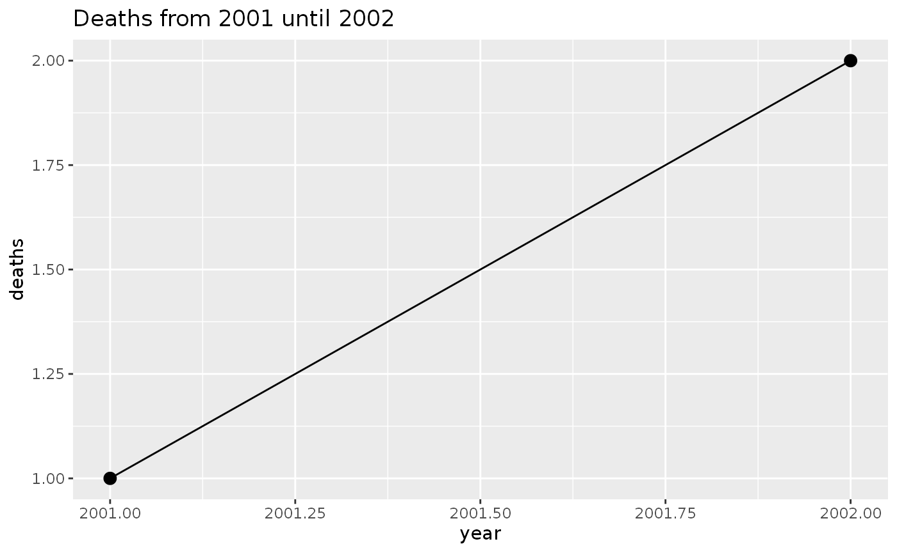
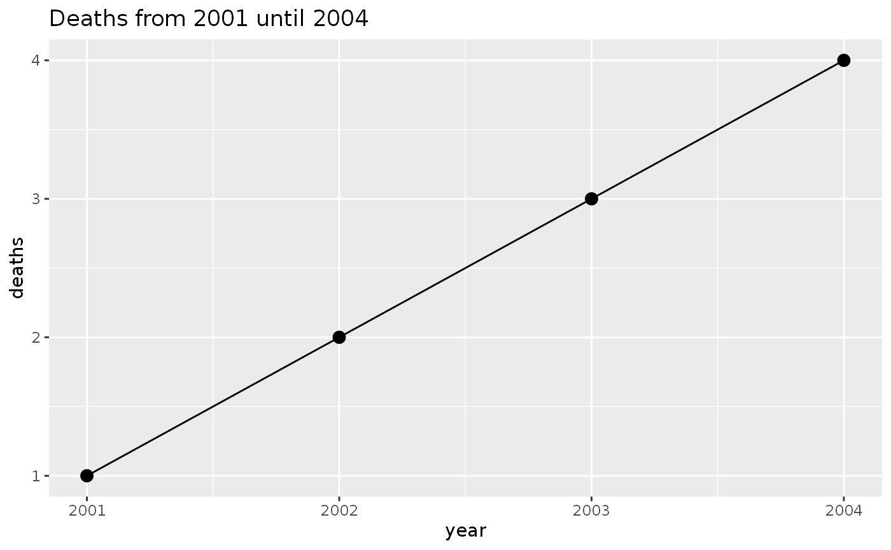

intro.Rmd| Object | Description |
| argset | A named list containing set of arguments |
| analysis |
These are the fundamental units that are scheduled in
|
| plan |
This is the overarching “scheduler”:
|
In brief, we work within the mental model where we have one (or more) datasets and we want to run multiple analyses on these datasets. These multiple analyses can take the form of:
table_1) called multiple times with different argsets (e.g. year=2019, year=2020)table_1, table_2) called multiple times with different argsets (e.g. table_1: year=2019, while for table_2: year=2019 and year=2020)By demanding that all analyses use the same data sources we can:
By demanding that all analysis functions only use two arguments (data and argset) we can:
By including all of this in one Plan class, we can easily maintain a good overview of all the analyses (i.e. outputs) that need to be run.
We now provide a simple example that shows how a person can develop code to provide graphs for multiple years.
library(ggplot2)
library(data.table)
# We begin by defining a new plan
p <- plnr::Plan$new()
# We add sources of data
# We can add data directly
p$add_data(direct = data.table(deaths=1:4, year=2001:2004), name = "deaths")
# We can add data functions that return data
p$add_data(fn = function() {
3
}, name = "ok")
# We can then add a simple analysis that returns a figure:
# To do this, we first need to create an analysis function
# (takes two arguments -- data and argset)
fn_fig_1 <- function(data, argset){
plot_data <- data$deaths[year<= argset$year_max]
q <- ggplot(plot_data, aes(x=year, y=deaths))
q <- q + geom_line()
q <- q + geom_point(size=3)
q <- q + labs(title = glue::glue("Deaths from 2001 until {argset$year_max}"))
q
}
# We can then add the analysis (function + argset) to the plan
p$add_analysis(
fn = fn_fig_1,
name = "fig_1_2002",
year_max = 2002
)
# And another analysis
p$add_analysis(
fn = fn_fig_1,
name = "fig_1_2003",
year_max = 2003
)
# And another analysis
# (don't need to provide a name if you refer to it via index)
p$add_analysis(
fn = fn_fig_1,
year_max = 2004
)
# How many analyses have we created?
p$len()## [1] 3# When debugging and developing code, we have a number of
# convenience functions that let us directly access the
# data and argsets.
# We can directly access the data:
p$get_data()## $deaths
## deaths year
## 1: 1 2001
## 2: 2 2002
## 3: 3 2003
## 4: 4 2004
##
## $ok
## [1] 3## $year_max
## [1] 2002## $year_max
## [1] 2002## $fn
## function(data, argset){
## plot_data <- data$deaths[year<= argset$year_max]
##
## q <- ggplot(plot_data, aes(x=year, y=deaths))
## q <- q + geom_line()
## q <- q + geom_point(size=3)
## q <- q + labs(title = glue::glue("Deaths from 2001 until {argset$year_max}"))
## q
## }
##
## $argset
## $argset$year_max
## [1] 2002
##
## $argset$index_analysis
## [1] 1# We recommend writing commented-out code for the first two
# lines of the analysis function that directly extracts
# the needed data and argset for one of your analyses.
# This allows for simple debugging and code development
# (the programmer would manually run the first two lines
# of code and then run line-by-line inside the function)
fn_analysis <- function(data, argset){
# data <- p$get_data()
# argset <- p$get_argset("fig_1_2002)
# function continues here
}
# We can run the analysis for each argset (by index and name):
p$run_one("fig_1_2002")
